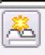
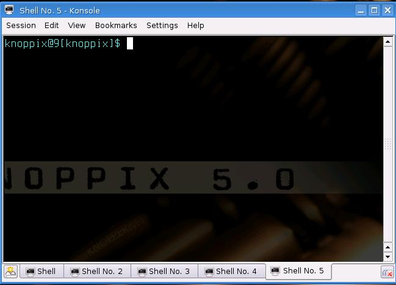
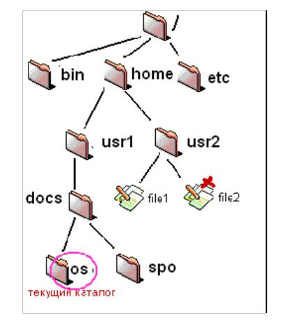

Лабораторная работа 1
Базовые инструментальные средства Linux.
Цель работы: ознакомление с базовыми инструментальными средствами командного интерпретатора Linux.
| Оглавление | Вперед |
Лабораторная работа 1Базовые инструментальные средства Linux.Цель работы: ознакомление с базовыми инструментальными средствами командного интерпретатора Linux. |
Работа может выполняется в ОС Knoppix, загружаемой с CD-ROM, или в любой другой ОС семейства Unix.
В ходе выполнения первой работы вы познакомитесь с основными командами интрепретатора. Выполнение данной работы даст вам ответы на следующие вопросы:
1. Вход в систему
После загрузки системы загружается консоль - это монитор и клавиатура, связанные непосредственно с системой (понятие со времен мейнфреймов). В ней необходимо зарегистрироваться: ввести логин и пароль (Внимание: ввод пароля не отображается. Если вы ошиблись при вводе пароля, то до нажатия enter можно отменить ввод, нажав CTRL-U. Если enter уже нажат - на экран выведется сообщение об ошибке.). Linux, как и некоторые другие версии UNIX, обеспечивает доступ к нескольким консолям, которые позволяют войти в систему под несколькими именами в одно время. Свежеинсталлированный Linux позволяет работать с шестью-семью консолями, переключение между которыми выполняется по alt-F1 - alt-F7. Но возможно обеспечить работу с 12-ю - по одной на каждую функциональную клавишу. Как видите, вы можете работать на нескольких консолях одновременно. Пока вы работаете на консоли #1, вы можете переключиться на консоль #2 и начать работу над чем-то другим.
После успешной регистрации в большинстве случаев в консоли появляется приглашение командного интерпретатора (shell). Особенностью Unix-подобных систем является то, что управление системой может полноценно выполнятся с помощью команд, т.е. без графической оболочки, загружаемой опционально (команда startx - запуск графической оболочки или, говоря на сленге, "иксов"). Конечно, если одной из задач системы не является работа с графикой. Существует множество командных интерпретаторов, которые отличаются синтаксисом команд и набором возможностей. Наиболее распросраненные, это: bash (по умолчаyнию в Linux), sh (по умолчаyнию в Unix), csh. Shell - это просто программа, которая воспринимает введенное пользователем, (т.е. команды, которые вы напечатаете) и транслирует это в команды системе.
При наличии графической оболочки (например, KDE) для запуска консоли необходимо нажать на кнопку с изображением монитора на панели задач (см.рис.1.1). Или выполнить: Пуск/Выполнить/konsole.

Рис. 1.1 - Кнопка запуска консоли
Можно создавать несколько сеансов путем нажатия кнопки в левом нижнем углу окна текущего сеанса (см. рис. 1.2).

Рис. 1.2 - Кнопка запуска дополнительного сеанса
Oкно сеанса Knoppix имеет вид, показанный на рис. 1.3.

Рис. 1.3 - Oкно сеанса Knoppix
В нем система уже напечатала приглашение (по умолчанию приглашением в Unix/Linux является символ '$'), в ответ не которое Вы можете вводить команды.
Для окончания сеанса работы с Linux введите exit или нажмите комбинацию клавиш Ctrl+D .
В сеансе работы с Linux Вашим текущим (домашним) каталогом является каталог: /home/имя, где имя - Ваше сетевое имя. К этому каталогу Вы имеете права чтения, записи, выполнения. Вы не имеете права записи к каталогам, не являющимся подкаталогами вашего домашнего каталога. Однако при запуске ОС Knoppix с CD необходимо учитывать, что ваш домашний каталог находится в памяти (ramdisk), а не на жестком диске. Поэтому перед выходом из Knoppix необходимо сохранять ваши рабочие файлы.
Существует возможность сохранять данные на разделы
(локальные диски) с FAT-файловой системой. flash-память в том
числе, а также на гибкий диск. Для этого необходимо, чтобы раздел был "примонтирован" с
правом записи на него. Примонтированные разделы обычно имеют имена hda1,
hda2, ..., hdaN (или sda1, sda2 и т.д.), flash - sda1, sda2, ..., sdaN (или sdb1, sdb2 и т.д.),
гибкий диск - fd0.
Монтирование осуществляется с помощью команды mount, которой нужно указать что
и куда вы монтируете (см. help с помощью команды man).
Выполнять команду mount может только пользователь root.
Например, для монтирования первого раздела с файловой системой FAT
необходимо выполнить команду:
mount /dev/hda1 /mnt/hda1.
Чтобы проверить какие разделы с какими правами уже примонтированы, выполните команду mount без параметров.
2. Выполнение команд
Работа в сеансе ведется в режиме командной строки. Стандартным приглашением в системах Unix и Linux является символ '$'. Обычно команда имеет вид:
имя_команды [опции]... [параметры]...
(Здесь и далее при описании команд квадратные скобки означают необязательный элемент, многоточие означает, что элементов данного типа может быть несколько.)
Опции команд являются флаговыми параметрами. В Linux, как правило, флаги имеют две формы - короткую и длинную. Короткая форма предваряется символом - и кодируется одной буквой. Длинная форма предваряется двумя символами -- и кодируется целым словом или даже фразой.
Все команды Linux имеют следующие стандартные опции:
| --help | Вывод подсказки по данной команде |
| --version | Вывод информации о версии данной команды |
Не забывайте , что командный язык Unix/Linux чувствителен к регистру!
Для первых экспериментов с командами используйте команды ls, cd и pwd. Команда 'ls -la' выведет Вам информацию о содержимом текущего каталога. Команда 'cd ..' переведет Вас в родительский каталог. Команда 'cd имя_подкаталога' переведет Вас в указанный подкаталог текущего каталога. Команда 'pwd' покажет Вам, какой каталог является текущим. Если Вы "заблудитесь", путешествуя по каталогам, команда 'cd' (без параметров) вернет Вас в Ваш домашний каталог. Не забывайте, что в Unix/Linux символ "слэш" - разделитель имен каталогов наклонен вправо: '/' !
Большинство систем LINUX/UNIX имеет стандартную структуру каталогов. Структура представляет из себя дерево каталогов, начинающееся с каталога "/", известного под названием "корневой каталог". Каталоги ниже / относятся к числу важнейших подкаталогов: среди них /bin, /etc, /dev, /usr, /home и т.д. Эти каталоги в свою очередь содержат другие каталоги, которые содержат системные конфигурационные файлы, программы и т.д. В частности, каждый пользователь в каталоге /home имеет домашний каталог, который выделяется пользователю для хранения его файлов (например, /home/user - домашний каталог пользователя user).
3. Получение подсказки
Одним из основных преимуществ ОС Linux является наличие встроенной справочной системы, которая содержит почти всю информацию по всем командам, библиотекам, и конфигурационным файлам. Основную часть справочной системы ОС Linux занимают страницы руководства man.
Страницы руководства man могут быть просмотрены как в графическом, так и в консольном режиме работы, что делает их самым быстрым источником получения необходимой справочной информации.
Страницы руководства man сгруппированы в несколько разделов, сведенных в таблицу 1.1. К аждый раздел руководства имеет свою тематику.
Параметром команды manявляется имя команды, по которой Вы хотите получить подсказку (например, man cd). При вводе команды man имя команды на экран выводится текст - описание заданной команды. Вы можете перемещаться по этому описанию вверх-вниз, используя клавиши управления курсором и клавиши PageUp и PageDown. Для выхода из режима команды man введите символ '!' или 'q'.
Таблица 1.1. Разделы справочного руководства man
| Номер раздела | Описание |
| 1 | Команды пользовательского уровня |
| 2 | Системные вызовы и коды ошибок ядра |
| 3 | Библиотечные функции |
| 4 | Драйверы устройств и сетевые протоколы |
| 5 | Форматы файлов |
| 6 | Игры и демонстрационные программы |
| 7 | Различные файлы и документы |
| 8 | Команды системного администрирования |
| 9 | Внутренние интерфейсы и спецификации ядра |
Альтернативным средством получения подсказки в Linux является команда info. Параметром команды info так же является имя интересующей Вас команды - info cd. При вводе команды info без параметров выводится список разделов, которые можно просмотреть при помощи команды info. Просмотр информации в info выполняется точно так же, как в man, кроме того, info обнспечивает элементы гипертекстового режима.
У многих команд есть опция -- help, результатом выполнения команды с данной опцией будет выдача в консоль подсказки по использования данной команды, например ls --help.
Освойте работу с подсказками - они потребуются Вам еще неоднократно.
На первой странице нашего практикума содержится:
4. Сохранение результатов
Для тех работ, в ходе которых Вы должны разработать и выполнить команды и/или скрипты и продемонстрировать их выполнение, используйте команду script, которая позволяет создать протокол работы пользователя на терминале. Мы рекомендуем вводить команду script перед выполнением окончательной (отчетной) версии созданной Вами команды/скрипта и заканчивать вложенный сеанс, команды script после выполнения команды/скрипта, чтобы не загромождать файл протокола отладочными вариантами с ошибками. Для того, чтобы результаты работы накапливались в файле протокола, используйте команду script с опцией -a.
Также можно скопировать ввод и выполнение команды из консоли в текстовый файл (см. раздел создание и редактирование текстовых файлов). .
5. Связь с коллегами
Определите, кто работает в системе (при помощи команды who ).
Обменяйтесь сообщениями (при помощи команды mail ) с одним или несколькими своими товарищами. Выберите себе партнера и по почте договоритесь с ним о дальнейшем сотрудничестве.
Другим способом обмена сообщениями является команда write. Правда, ее можно использовать только в том случае, когда и отправитель, и адресат работают в системе. Попробуйте команду write , возможно, она Вам больше понравится.
6. Создание, редактирование и просмотр текстовых файлов
В Unix/Linux имеется богатый набор средств ввода-редактирования текстов.
Создать и редактировать файл можно при помощи полноэкранного текстового редактора vi. Здесь вы можете прочитать инструкцию по "быстрому началу" работы с vi. А здесь содержится несколько более полное описание vi. Vi является одним из самых мощных редакторов текстовых файлов (см. также подсказку, команда man vi).
Можно создать и дописывать файл при помощи команды tee.
Для окончания ввода необходимо нажать комбинацию клавиш Ctrl-D (см. также подсказку, команда man tee).
Еще одним, более простым по сравнению с vi, тектовым редактором я вляется nano (см. подсказку, команда man nano). В данном редакторе переход в разные режимы редактирования выполняется путем нажатия комбинаций клавиш, например, Ctrl-X - выход из редактора, Ctrl-O - сохранение файла (см. подсказку в редакторе внизу экрана).
ed - еще один мощный текстовый редактор. Позволяет создавать и редактировать текстовые файлы. Здесь вы можете прочитать инструкцию по "быстрому началу" работы с ed. А здесь содержится несколько более полное описание ed(см. также подсказку, команда man ed).
Просмотреть содержимое файла (вывести содержимое файла на стандартное устройство вывода) можно при помощи команды cat, less, more. При этом less позволяет выполнять скроллинг экрана, что удобно в случае просмотра больших файлов (см. подсказку, команда man less). .
Вывод содержимого каталога осуществляется при помощи команды
ls. При этом команда ls -l позволяет просмотреть информацию о файлах текущего каталога
(тип файла, права доступа и т.д.).
7. Управление файлами
В ОС Linux следует различать физическую файловую систему, которая отвечает за управление дисковым пространством и размещение файлов в физических адресах диска
и логическую файловую систему, которая обеспечивает логическую структуру хранения файлов - пространство имен файлов. ОС Unix и Linux могут работать с различными физическими файловыми системами
(Ext2, ext3, ufs), логическое же представление файловой системы в Unix/Linux структурировано.
Все файлы в логической файловой системе располагаются в виде дерева, промежуточные вершины которого соответствуют каталогам,
и листья - файлам и пустым каталогам. Реально на каждом логическом диске (разделе физического дискового пакета) располагается отдельная
иерархия каталогов и файлов. Для получения общего дерева в динамике используется "монтирование" отдельных иерархий к фиксированной
корневой файловой системе в качестве ветвей общего дерева. Самым верхом иерархии является корень, который имеет предопределенное имя
“/” (слэш). Этот же символ используется как разделитель имен в пути. Далее в корне находятся папки с определенными для каждого
дистрибутива именами (etc, home, bin, mnt, proc и т.д.).
Полное имя файла, например, /bin/sh означает, что в корневом каталоге должно содержаться имя каталога bin, а в каталоге bin должно
содержаться имя файла sh. Коротким или относительным именем файла называется имя, задающее путь к файлу от текущего рабочего каталога.
В каждом каталоге содержатся два специальных имени, имя "." - ссылка на текущий каталог, и имя ".." - ссылка "родительский" каталог
данного текущего каталога, т.е. каталог, непосредственно предшествующий данному в иерархии каталогов.
Так, например, для структуры, показанной на следующем рисунке 1.4 доступ к отмеченному на рисунке файлу из текущего каталога возможен
по полному имени: /home/usr2/file2 или по относительному имени: ../../../usr2/file2 (если текущий каталог – os).

Рис. 1.4 - Пример иерархии каталогов
Управление файлами также можно выполнять с помощью Midnight Commander (mc)- один из файловых менеджеров с текстовым интерфейсом типа Norton Commander
для UNIX-подобных операционных систем. Запуск mc из консоли выполняется с помощью команды mc.
Типы файлов
ОС LINUX поддерживают несколько типов файлов:
Данный тип файла отображается командой ls -l в виде символа "l".
Файловая система UNIX/LINUX обеспечивает возможность связывания одного и того же файла с разными именами. Существуют жесткие и мягкие ссылки.
Жесткая ссылка является просто еще одним именем для исходного файла и не являетсятипом файла. Она прописывается в индексном дескрипторе
исходного файла (в структуре, хранящей метаданные файла). После создания жесткой ссылки невозможно различить, где исходное имя файла,
а где ссылка. Если вы удаляете один из этих файлов (точнее одно из этих имен), то файл еще сохраняется на диске (пока у него есть хоть
одно имя-жесткая ссылка). Очень трудно различить первоначальное имя файла и позже созданные жесткие ссылки на него. Поэтому жесткие ссылки
применяются там, где отслеживать различия и не требуется. Одно из применений жестких ссылок состоит в том, чтобы предотвратить возможность
случайного удаления файла. Особенностью жестких ссылок является то, что они прямо указывают на номер индексного дескриптора, а, следовательно,
такие имена могут указывать только на файлы внутри той же самой файловой системы (т. е., на том же самом носителе, на котором находится каталог,
содержащий это имя).
Cимволические ссылки тоже могут рассматриваться как дополнительные имена файлов, но в то же время они представляются отдельными файлами —
файлами типа символических ссылок и являются самостоятельным типом файла. Однако блоки данных файла в системе представляются в одном экземпляре,
у файла-ссылки адреса блоков данных те же, что и у исходного файла. В отличие от жестких ссылок символические ссылки могут указывать
на файлы, расположенные в другой файловой системе, например, на монтируемом носителе, или даже на другом компьютере. Если исходный файл удален,
символическая ссылка не удаляется, но становится бесполезной. Используйте символические ссылки в тех случаях, когда хотите избежать путаницы,
связанной с применением жестких ссылок.
Создание любой ссылки внешне подобно копированию файла, но фактически как исходное имя файла, так и ссылка указывают на один и тот же
реальный файл на диске. Поэтому, например, если вы внесли изменения в файл, обратившись к нему под одним именем, вы обнаружите эти изменения
и тогда, когда обратитесь к файлу по имени-ссылке.
Для создания ссылки, используется команда ln.
Пример:
[user]$ ln -s /home/user/ve/HOWTO/font-HOWTO-ru/ ~/FONTS
После выполнения такой команды в домашнем каталоге появился подкаталог FONTS. Если теперь просмотреть список файлов в каталоге
/home/user с помощью команды ls -l, то среди прочих увидим такую строку:
lrwxrwxrwx 1 kos kos 31 Dec 13 21:13 FONTS -> /home/kos/ve/HOWTO/font-HOWTO-ru/
Обратите внимание на самый первый символ в этой строке: он показывает, что данная запись соответствует символической ссылке.
Это видно и в поле имени, где после нового имени и стрелки указано исходное имя файла (в данном случае — каталога).
Команды работы с файлами и дирректориями
| # pwd | # Выводит текущий путь. |
| # ls | # Выводит список файлов и каталогов по порядку; |
| # ls -laX | # Выводит форматированный список всех файлов и директорий, включая скрытые; |
| # cd | # Переход в домашнюю директорию; |
| # cd /home | # Переход в директорию /home; |
| # cd .. | # Переход в каталог уровнем выше того, в котором сейчас находитесь; |
| # cd ../.. | # Переход в каталог двумя уровнями выше того, в котором сейчас находитесь; |
| # cd - | # Переход в каталог в котором вы находились до перехода в текущий каталог; |
| # touch /home/primer2 | # Создание пустого файла /home/primer2; |
| # cat /home/primer2 | # Показать содержимое файла /home/primer2; |
| # tail /var/log/messages | # Выводит конец файла. Удобно при работе с логами и большими файлами; |
| # head /var/log/messages | # Выводит первые строки файла; |
| # nano /home/primer2 | # Редактирование файла /home/primer2; |
| # echo "Последняя строчка" | sudo tee -a /home/primer2 | # Добавление к концу файла "Последняя строчка" в файл /home/primer2; |
| # cp /home/Mut@NT/primer.txt /home/primer.txt | # Копирует /home/Mut@NT/primer.tx в home/primer.txt; |
| #ln -s /home/Mut@NT/primer.txt /home/primer | # Cоздает символическую ссылку /home/primer к файлу /home/Mut@NT/primer.txt; |
| # mkdir /home/Mut@NT/shaman | # Создание директории с именем shaman; |
| # rmdir /home/Mut@NT/shaman | Удаление директории с именем shaman; |
| # rm -rf /home/Mut@NT/shaman | # Удаление директории с вложенными фалами; |
| # cp -la /dir1 /dir2 | # Копирование директорий; |
| # mv /dir1 /dir2 | # Переименование директории; |
| # du -sh /home/Mut@NT/ | # Выводит на экран размер заданной директории. Можно использовать для определения размера файлов (количество блоков диска, занятых каждым файлов в вашем текущем каталоге); |
| # tree | # Показывает древовидный список файлов и каталогов в вашем текущем каталоге. Также подсчитывает их количество. В зависимости от количества файлов подсчет файлов может занять некоторое время; |
| # dir | # Показывает содержимое вашего текущего каталога в алфавитном порядке и с учётом регистра названий; |
| # df | # Выводит в консоли количество занятого и свободного места на жестком диске для каждого каталога системы; |
| # locate primer | # Поиск всех файлов с именем primer; |
Общие команды Linux
| # uname -a | # Показать версию ядра Linux; |
| # man hier | # Описание иерархии файловой системы (для чего нужна каждая директория в linux); |
| # clear | # Очищение экрана терминала; |
| # date | # Показывает текущую дату и время |
| # cal -3 | # Показывает в удобной форме календарь за предыдущий, текущий и последующий месяцы; |
| # uptime | # Показать текущее время и работу системы без перезагрузки и выключения; |
| # hostname | # Показать сетевое имя компьютера; |
| # whois linux.org | # Показать информацию о доменом имени linux.org; |
| # export http_proxy=http://your.proxy:port | # Изменить переменной окружения http_proxy, для использования интернета через proxy-сервер; |
| # wget http://itshaman.ru/images/logo_white.png | # Скачать файл http://itshaman.ru/images/logo_white.png в текущую папку; |
| # wget --convert-links -r http://www.linux.org/ | # Копирование сайта целиком и конвертирование ссылок для автономной работы. Копирование происходит на 5 уровней в глубину; |
| # !! | # Выполнить последнюю команду; |
| # history | tail -50 | # Показать последние 50 набранных команд; |
| # exit | # Завершить сеанс текущего пользователя; |
| # passwd | # Меняет пароль текущего пользователя; |
| # shutdown -h now | # Выход из Linux; |
| # poweroff | # Выход из Linux; |
| # reboot | # Перезагрузка системы; |
| # last reboot | # Cтатистика перезагрузок; |
| # host itshaman.ru | # Показывает IP-адрес введенного сайта. |
| # who | # Показывает пользователей системы. |
Избранные функции bash
Командный процессор делает больше, нежели просто запускает команды. Также он предоставляет мощные функции для того, чтобы облегчить эту задачу.
Например:
В данной работе кратко описано использование групповых символов, остальные средства будут описаны в следующих работах.
Выполните команду info bash, чтобы получить полную документацию.
Групповые символы
Группвые символы предоставляют возможность задавать наборы файлов со схожими именами. Например, а* означает все файлы, которые начинаются с прописной буквы "а". Групповые символы "заменяются" командным процессором на набор имен файлов, которым они соответствуют. То есть если вы набираете:
$ Is а*
то командный процессор сначала заменяет а* на имена файлов в вашей рабочей директории, которые начинаются с буквы "а", как будто если бы вы набрали следующую команду.
Is aardvark adamantium apple
Команда ls никогда не узнает, что вы использовали групповой символ, она видит только окончательный список имен файлов после после того, как командный процессор обработает групповой символ.
Типы групповых символов
Если вы хотите включить в набор символ минуса, то поместите его первым или последним. Чтобы включить в набор закрывающую квадратную скобку, поместите ее первой. Чтобы включить в набор символы ^ или !, не помещайте их на первое место.
Синтаксис команд см. в Избранные команды и свойства Unix. или в консоли с помощью man.
При выполнении домашней работы (при создании файлов) Вы можете воспользоваться следущими текстами в соответствии вариантов индивидуальных заданий
| 1 | 2 | 3 | 4 | 5 |
| 6 | 7 | 8 | 9 | 10 |
| 11 | 12 | 13 | 14 | 15 |
| Оглавление | Вперед |